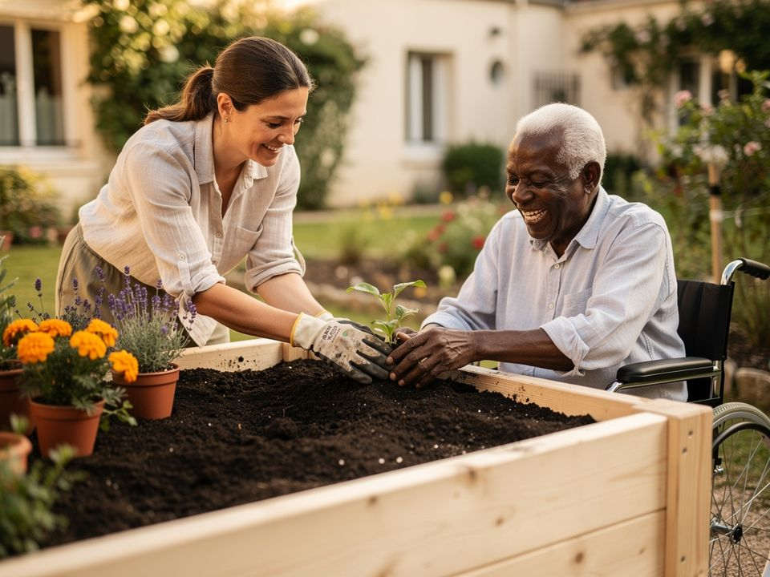
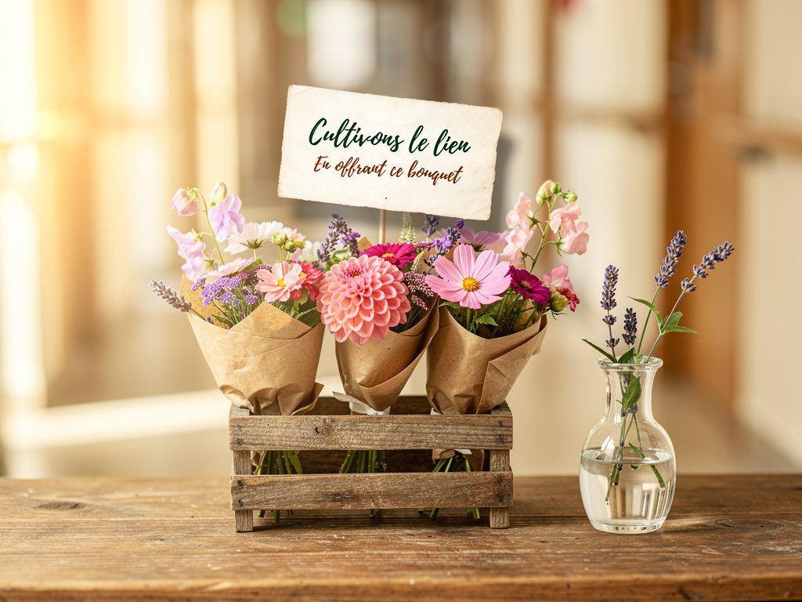

Créer et entretenir les jardins
Planches surélevées à hauteur de fauteuil roulant, allées praticables, essences robustes et fleurissantes. Nos bénévoles en assurent l'entretien, saison après saison.
Association loi 1901 · Hortithérapie
Dans les centres hospitaliers et les EHPAD, nous créons et animons des jardins collectifs à dimension thérapeutique, pour lutter contre l'isolement social des personnes en soins.

Notre mission
L'entrée en soins rompt souvent les liens du quotidien, et l'isolement qui s'installe dégrade la santé mentale. Un jardin peut y répondre : un lieu où l'on ne vient pas seulement se soigner, mais faire ensemble.
Moins de rencontres spontanées, un monde qui se réduit à une chambre : les équipes soignantes et gérontologues constatent ses effets : anxiété, dépressivité, déclin cognitif*.
Semer, repiquer, arroser : des gestes simples qui apaisent, restaurent la confiance et sollicitent sens, motricité et mémoire, en appui du projet de soins**.
Ce n'est pas tant la plante qui soigne que ce qui se passe autour : mains qui se croisent, savoir-faire partagés, conversations qui naissent.
Nos actions
L'association conçoit les jardins, anime les ateliers et vend les fleurs produites : les équipes soignantes gardent l'essentiel, leur temps auprès des patients et des résidents.
Planches surélevées à hauteur de fauteuil roulant, allées praticables, essences robustes et fleurissantes. Nos bénévoles en assurent l'entretien, saison après saison.
Chaque semaine : semis, plantation, rempotage, composition de bouquets. Des ateliers réguliers, animés par des bénévoles formés, en lien avec les équipes soignantes.
Les fleurs cultivées deviennent des bouquets proposés aux familles : chaque bouquet soutient le financement des ateliers et relie les proches au jardin.

Chaque bouquet vendu finance les ateliers et offre aux familles un peu du jardin.
Chaque séance suit le cycle de vie d'une plante, du semis au bouquet. On y découvre l'horticulture par la pratique, à son rythme, en échangeant avec les autres.
Graines, terreau, étiquettes : chacun sème ses propres plants puis suit leur levée, semaine après semaine.
La motricité en douceur : les jeunes pousses passent en terre ou en pot, à hauteur de fauteuil.
Arrosage, observation, petits soins : prendre soin d'une plante qui grandit, c'est voir ses efforts fleurir.
Cueillette et bouquets : les fleurs récoltées deviennent des bouquets à offrir aux familles.
Agir avec nous
« Cultivons le lien » est une jeune association : chacun des premiers engagements compte double.
Aider
Devenir
Main verte ou grand cœur : vous accompagnerez les ateliers et aiderez chacun à participer, à son rythme. Nous formons tous nos bénévoles aux bons gestes et au contact des publics fragiles.
Devenir
Établissements de santé, EHPAD, collectivités, mutuelles, fondations ou mécènes : accueillons un jardin dans vos murs, ou soutenons le réseau.
Donner
Votre don finance les planches et la terre, les graines et l'outillage, la formation des bénévoles et les premiers jardins. Quel que soit son montant, chaque don donne du lien.
Soutenir
Réduction d'impôt sur le don : 66 % du montant dans la limite de 20 % du revenu imposable, pour les dons aux associations reconnues d'intérêt général (sous réserve de l'éligibilité de l'association).
Terrains, plants, terreau, outils, logistique ou mécénat d'entreprise : chaque forme de soutien fait pousser un jardin de plus. Écrivez-nous, nous construisons ensemble la formule qui vous ressemble.
Dossier de financement
Fondations, entreprises mécènes, financeurs publics : chaque euro du projet est tracé, du coût d'un bac de plantation au plan de financement nominatif. Voici la synthèse ; le classeur complet, ses hypothèses et leurs sources sont accessibles ci-dessous.
| Indicateur | Année 1 | Année 2 | Année 3 |
|---|---|---|---|
| Jardins en activité | 1 | 3 | 6 |
| Revenus totaux | 16 270 € | 48 810 € | 97 620 € |
| Résultat avant subventions | +3 312 € | −7 065 € | +8 871 € |
| Subventions visées | 0 € | 7 065 € | 0 € |
| Résultat net | +3 312 € | 0 € | +8 871 € |
| Famille de financeurs | Exemples ciblés | Montant |
|---|---|---|
| Fondations | Lemarchand, Hôpitaux de France, Léa Nature, Georges Truffaut, Jardins & Santé | 60 000 € |
| Financeurs publics | ARS Île-de-France, Conférence des financeurs de la perte d'autonomie (92), collectivités | 38 000 € |
| Mécénat et collecte | Caisse d'Épargne Île-de-France, entreprises locales, dons individuels, HelloAsso | 40 000 € |
| Total demandé | 12 demandes identifiées | 138 000 € |
Lecture : il suffit qu'environ 17 % des demandes aboutissent pour financer entièrement le pilote de l'année 1. La seule année à équilibrer est l'année 2 (deux ouvertures et un coordinateur à mi-temps), couverte par l'objectif de collecte ci-dessus. Le compte de résultat compte l'année 1 pleine ; sur un lancement effectif en cours d'année, le pilote reste positif (+1 456 €). Aucune probabilité de réussite n'est inventée : le seul taux public documenté du secteur est celui de la bourse Jardins & Santé (16 %).
Classeur Excel, 8 feuilles : synthèse, hypothèses, CAPEX, OPEX, revenus, compte de résultat sur 3 ans, plan de financement, go-to-market. S'ouvre dans un nouvel onglet ou se télécharge.
Contact
Bénévolat, partenariat, don ou simple curiosité : écrivez-nous, chaque message reçoit une réponse.
Notes et sources
* Isolement social et santé : la solitude et l'isolement social sont associés à un risque accru de mortalité prématurée (Holt-Lunstad et al., Loneliness and Social Isolation as Risk Factors for Mortality, Perspectives on Psychological Science, 2015) ; en France, la question est suivie par la DREES (La sociabilité et l'isolement social des seniors, Les dossiers de la DREES n° 98, 2022).
** Hortithérapie : les revues systématiques et méta-analyses disponibles rapportent une réduction des symptômes dépressifs et anxieux, et une amélioration de la santé générale des personnes âgées (Effectiveness of horticultural therapy in aged people with depression, Frontiers in Public Health, 2023 ; Horticultural therapy for general health in the older adults, PLOS ONE, 2022).